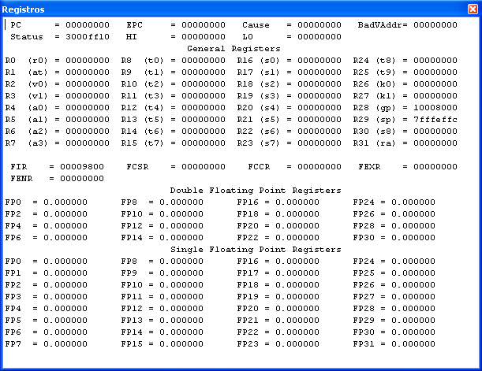
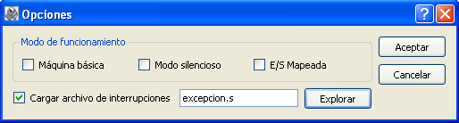

1. Comandos
El menú archivo ofrece los siguientes comandos para el tratamiento de archivos:
Inicio
En el menú simulación se encuentran los comandos relacionados con la simulación de la ejecución del programa actualmente ensamblado, que son los siguientes:
-
Limpiar registros: Restaura al valor inicial el contenido de los registros.
-
Reinicializar: Restaura a su valor incial el contenido de los registros y la memoria.
-
Recargar: Permite ensamblar de nuevo el archivo actualmente ensamblado.
-
Ejecutar: Sirve para ejecutar el programa cargado en memoria. Antes de comenzar la ejecución un diálogo permite especificar la dirección de comienzo de la ejecución. (F5)

-
Detener ejecución: Permite detener la ejecución en curso.
-
Ejecución paso a paso: Permite ejecutar el programa instrucción por instrucción. (F10)
-
Ejecución multipaso: Mediante un cuadro de diálogo se especifica el número de instrucciones que se deben ejecutar en cada paso. (F11)
-
Puntos de ruptura: Sirve para introducir o borrar puntos de ruptura en la ejecución del programa. Un cuadro de diálogo permite añadir las direcciones de memoria en las que se desea detener la ejecución. (Ctrl+B)

-
Fijar valor: Permite cambiar el contenido de un registro o una posición de memoria.
-
Imprimir valor: Permite mostrar en el panel de mensajes el contenido de un rango de memoria o el valor asociado a las etiquetas globales.
-
Opciones: Permite modificar el modo de funcionamiento de GlSpim y la ruta de la rutina de servicio de interrupción.
Inicio
En el menú ver encontramos los comandos relacionados con la visualización de los distintos elementos que componen la aplicación, estos comandos son:
-
Limpiar consola: Limpia el contenido de la consola.
-
Barra de herramientas: Oculta o hace visible la barra de herramientas.
-
Barra de estado: Oculta o hace visible la barra de estado.
-
Consola: Oculta o hace visible la consola.
-
Registros: Oculta o hace visible el panel de registros.
-
Segmento de texto: Oculta o hace visible el panel de segmento de texto.
-
Segmento de datos: Oculta o hace visible el panel de segmento de datos.
-
Mensajes: Oculta o hace visible el panel de mensajes.
-
Restaurar disposición por defecto: Recupera la disposición por defecto de la barra de tareas y los paneles del simulador en la ventana principal del programa.
Inicio
Menú Ayuda
En el menú ayuda encontramos los comandos de ayuda para asistir al usuario, son los siguientes:
Inicio
El SPIM (MIPS al revés) es un simulador que ejecuta programas en lenguaje
ensamblador para los computadores basados en los procesadores MIPS R2000/R3000.
La arquitectura de este tipo de procesadores es RISC, por lo tanto simple y
regular, y en consecuencia fácil de aprender y entender.
La pregunta obvia en estos casos es por qué se va a utilizar un simulador y
no una máquina real. Las razones son diversas: entre ellas cabe destacar la
facilidad de poder trabajar con una versión simplificada y estable del
procesador real. Los procesadores actuales ejecutan varias instrucciones al
mismo tiempo y en muchos casos de forma desordenada, esto hace que sean más
difíciles de comprender y programar.
Este simulador es una versión gráfica del SPIM llamado GlSpim.
Inicio
Al ejecutar GlSpim aparece la siguiente
ventana

La ventana principal de GlSpim se
divide en tres partes:
- La
parte superior de la ventana es la barra de menús. Permite acceder a las
operaciones con ficheros (menú Archivo), especificar las opciones del
simulador (menú Simulación), seleccionar la forma de visualización de las
ventanas incluidas en la ventana principal (menú Ver), y obtener
información de ayuda (menú Ayuda).
- Debajo de la barra de menús se encuentra la barra de herramientas que incluye en forma de botones algunas de las
acciones más comunes en GlSpim.
- La parte central de la ventana de la
aplicación sirve para visualizar cuatro paneles: Registros, Segmento de Texto,
Segmento de Datos y Mensajes.
A continuación se presentan las
características de estas cuatro ventanas:
Aparecen el
nombre y el contenido de los registros enteros, R0 a R31, con sus
correspondientes alias entre paréntesis, los registros de coma flotante, FP0 a
FP31, los registros de control de la CPU (BadVAddr, Cause, Status, EPC) y los
registros especiales para la multiplicación y división entera, HI y
LO.

Se pueden ver
cada una de las direcciones, el código máquina, las instrucciones ensambladas y
el código fuente del programa de usuario (a partir de la dirección 0x00400000)
y del núcleo del simulador (a partir de la dirección 0x80000000).
Aparecen las
direcciones y datos almacenados en las zonas de memoria de datos del usuario (a
partir de la dirección 0x10000000
en adelante), el núcleo del simulador (a partir de la dirección 0x90000000)
y la pila (el puntero de pila, registro sp, se encuentra cargado con la
dirección 0x7fffeffc,
y ésta crece hacia direcciones decrecientes).
En este
panel se observan los diversos mensajes que comunica el simulador, que nos
tendrán informados del resultado y evolución de las acciones que éste lleva a
cabo.
Existe una quinta ventana, llamada
Consola, independiente, a la que se accede con la opción
Ver->Consola, y que sirve para realizar la entrada/salida del
programa simulado. En esta ventana se teclean los datos de entrada, cuando sean
necesarios, y se lee la información que pueda imprimir nuestro programa.
Carga y ejecución de
programas
Los ficheros de entrada a GlSpim son de
tipo texto ASCII, que incluyen las instrucciones ensamblador del programa que se
desea simular.
Para cargar un programa se selecciona
Archivo->Abrir (o el botón Abrir de la barra de herramientas, con el
icono de la carpeta abriéndose) con lo que aparecerá un cuadro de diálogo donde
se puede seleccionar el fichero que se quiere abrir.
Para ejecutar el programa,
Simulación->Ejecutar (o el botón de Ejecutar programa de la barra de herramientas), hará que GlSpim
comience a simularlo. Previamente pedirá que se le indique la dirección de
comienzo del programa (en hexadecimal). En nuestro caso este valor será
normalmente 0x00400000 (donde comienza nuestro segmento de texto). Si se desea
detener la ejecución del programa, Simulación->Detener ejecución (o el botón de Detener ejecución de la barra de herramientas).
Si el programa incluye operaciones de
lectura o escritura desde el terminal, GlSpim despliega una ventana
independiente llamada Consola, a través de la cual se realiza la
entrada-salida (se simula un terminal de la máquina MIPS).
Depuración de
programas
Si un programa no hace lo que se
esperaba, hay algunas características del simulador que ayudarán a depurar el
programa. Con Simulación->Ejecución paso a paso (o bien la tecla F10) es posible
ejecutar las instrucciones del programa una a una (paso a paso). Esto
permite verificar el contenido de los registros, la pila, los datos, etc., tras
la ejecución de cada instrucción. Empleando Simulación->Ejecución Multipaso
se consigue ejecutar el programa un número determinado de
instrucciones.
GlSpim también permite ejecutar todas
las instrucciones de un programa hasta llegar a un determinado punto, denominado
breakpoint (punto de ruptura), a partir del cual se puede recuperar el
control del programa y, por ejemplo, continuar paso a paso. Para ello, se
selecciona Simulación->Puntos de ruptura (o el botón Puntos de ruptura de la
barra de herramientas). Una vez
seleccionada esa opción, GlSpim muestra una ventana en la que pide la(s)
dirección(es) en la(s) que se quiere que el programa se detenga, para recuperar
el control sobre el mismo. Se debe mirar cuál es la dirección en que interesa
parar el programa, en la ventana del segmento de texto, e introducirla (en
hexadecimal) en la ventana, pulsando a continuación la tecla 'Añadir', para añadir
dicho breakpoint. Se pueden introducir tantos puntos de ruptura como se
desee.
Una vez encontrado el error y
corregido, se vuelve a cargar el programa con
Simulación->Recargar<nombre_fichero>. Con Simulación->Limpiar registros se pone el contenido de los registros a cero (excepto $sp), mientras que con Simulación->Reinicializar se reinicializa el contenido de los registros y de la memoria.
Cuando es necesario conocer el valor de los símbolos globales o de un rango de memoria en concreto con Simulación->Imprimir valor se imprimen en la ventana de mensajes los valores solicitados. Con Simulación->Fijar valor se cambia el valor actual de
un registro o de una posición de memoria por un valor arbitrario.
Opciones del
simulador
Al elegir la opción
Simulación->Opciones se muestran las diversas opciones que ofrece el
simulador. GlSpim utiliza estas opciones para determinar cómo cargar y ejecutar
los programas. Una vez escogida esta opción aparece la siguiente
ventana

El significado de las opciones es el
siguiente:
1.
Máquina básica . Simula el ensamblador sin
pseudoinstrucciones o modos de direccionamiento suministrados por el simulador.
2.
Modo silencioso . Si se activa, GlSpim no imprime mensaje alguno cuando se producen las excepciones. De otra manera, se muestra un mensaje cuando ocurre una excepción.
3.
E/S Mapeada . Si se selecciona esta opción, se activa la
entrada-salida mapeada en Memoria. Los programas que utilizan llamadas al
sistema (syscall), para leer o escribir en el terminal, deben desactivar
esta opción. Aquellos otros programas que vayan a hacer entrada-salida mediante
mapeo en memoria deben tenerla activada.
4.
Cargar archivo de interrupciones . Indica si se debe cargar el manejador de interrupciones (fichero 'trap.handler'). En tal caso, cuando se produce una excepción, GlSpim salta a la dirección 0x80000080, que contiene el código necesario para tratar la excepción.
La sintaxis del lenguaje ensamblador es algo que se descubrirá poco a poco,
pero es interesante introducir algunos conceptos básicos:
Comentarios
Estos son muy importantes en los lenguajes de bajo nivel ya que ayudan a
seguir el desarrollo del programa y, por tanto, se usan con profusión. Comienzan
con un carácter de almohadilla "#" y desde este carácter hasta el final de la
línea es ignorado por el ensamblador.
Identificadores
Son secuencias de caracteres alfanuméricos, guiones bajos (_) y puntos (.),
que no comienzan con un número. Los códigos de operación son palabras reservadas
que no pueden ser utilizadas como identificadores.
Etiquetas
Son identificadores que se sitúan al principio de una línea y seguidos de dos
puntos. Sirven para hacer referencia a la posición o dirección de memoria del
elemento definido en ésta. A lo largo del programa se puede hacer referencia a
ellas en los modos de direccionamiento de las instrucciones.
Pseudoinstrucciones
No son instrucciones que tengan su traducción directa al lenguaje máquina que
entiende el procesador, pero el ensamblador las interpreta y las convierte en
una o más instrucciones máquina reales. Permiten una programación más clara y
comprensible. A lo largo del desarrollo de las prácticas se irán introduciendo
diferentes pseudoinstrucciones que permite utilizar este ensamblador.
Directivas
Tampoco son instrucciones que tengan su traducción directa al lenguaje
máquina que entiende el procesador, pero el ensamblador las interpreta y le
informan a éste de cómo tiene que traducir el programa. Son identificadores
reservados, que el ensamblador reconoce y que van precedidos por un punto. A lo
largo del desarrollo de las prácticas se irán introduciendo las distintas
directivas que permite utilizar este ensamblador.
Por otro lado, los números se escriben, por defecto, en base 10. Si van
precedidos de 0x, se interpretan en hexadecimal. Las cadenas de caracteres se
encierran entre comillas dobles ("). Los caracteres especiales en las cadenas
siguen la convención del lenguaje de programación C:
·
Salto de línea: \n
·
Tabulador: \t
·
Comilla: \''
A la hora de generar un fichero con un programa en ensamblador (extensión
.s), hay que tener en cuenta que algunas versiones del SPIM tienen un "bug", que se evita haciendo que los códigos en ensamblador almacenados
en estos ficheros terminen siempre con una línea en blanco (vacía).